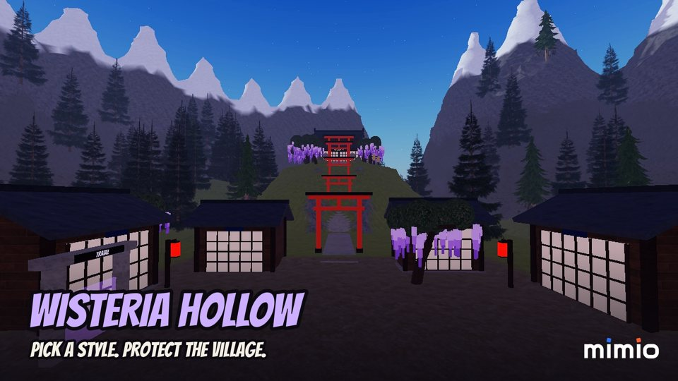
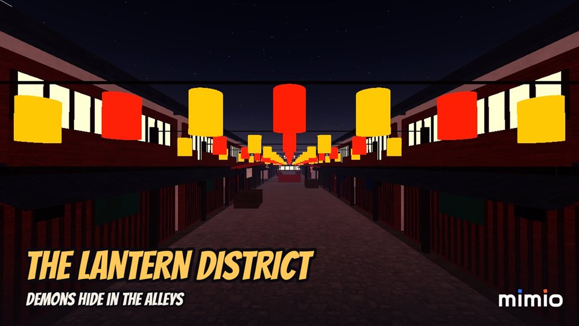
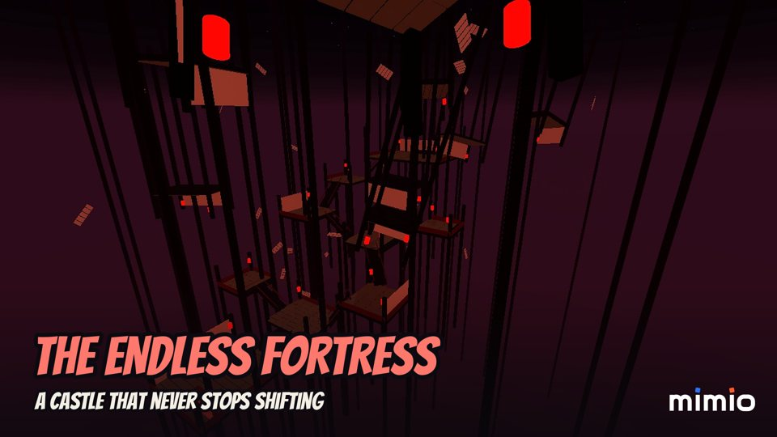

AI Game Studio Automation for Mimio Entertainment¶
Status: Ongoing | First game, Wisteria Hollow, published on Roblox (private test, public release scheduled); first YouTube Short live
Executive Summary¶
An AI automation system that runs a small game studio end to end: market research, compliance, game design, building the game in Roblox Studio, QA, store listing, marketing and publishing. A team of AI agents drafts every step, the developer approves what matters, and the same pipeline is built to take Unity or any other engine later.
Built for Mimio Entertainment, an independent Roblox game studio from Indonesia. The first game it produced is Wisteria Hollow, an original anime-style slayer adventure with six areas, seven fighting styles, saved progress, Bahasa Indonesia and English, touch controls and four game passes.



Store thumbnails generated from real in-game captures taken by the pipeline in Roblox Studio.
Key Results¶
| Metric | Value |
|---|---|
| Agent team | 12 role agents (research, compliance, design, art direction, Roblox and Unity builders, QA, store, marketing, content, analytics, producer) on headless Claude Opus |
| Launch pipeline | 18 steps from research to post-launch review, with approval gates and human steps |
| Game built through the pipeline | saving with a session lock, levels 1 to 15 with area gates, two languages, mobile controls, a cosmetics shop and 4 game passes |
| Roblox integration | Open Cloud: experience status, game passes created with icons, data store checks and test scripts run on live Roblox servers |
| Marketing output | brand kit and store art generated from code; a 31-second Short recorded, edited, voiced and uploaded to YouTube from the dashboard |
| Engine scope | engine-agnostic: a new engine is one config entry plus one builder agent, no pipeline change |
How It Works¶
flowchart LR
G["Goal for a game"] --> A["Agent team<br/>(headless Claude)"]
A --> S["Steps: research, compliance,<br/>design, art, build brief, QA"]
S --> H["Developer approves<br/>or sends back with notes"]
H --> B["Build in Roblox Studio<br/>via the Studio MCP"]
B --> R["Roblox Open Cloud<br/>passes, data, live checks"]
S --> P["Publishing queue<br/>YouTube, TikTok, Instagram, Facebook"]
S --> V["Obsidian vault<br/>notes and status maps"]- Agents draft, the developer decides. Each pipeline step is either an agent step (one call at a time, capped per day), a human step (building, playtesting, account setup) or an approval. Sending a step back reruns the agent with the developer's notes.
- The game is built for real, not described. The build runs in Roblox Studio through its MCP server: scripts are written, play sessions started, kills, travel and purchases tested on the server and the client, and the place published under the studio's Roblox community.
- Nothing reaches the outside world without approval. Roblox changes (new game passes, publishes) and social posts are requests on the dashboard that only run after the developer approves them; a post is never re-sent after an unclear result.
- Everything is visible. A web dashboard shows runs, approvals, posts and live Roblox status, and an Obsidian vault mirrors every step as notes and a canvas map coloured by status.
The Game: Wisteria Hollow¶
- Progression and saving: a profile per player in Roblox data stores with retries, a session lock across servers, autosave and save on leave or shutdown; verified by playing, leaving and rejoining.
- Two languages: every text in the game, from dialogue to signs and prompts, in Bahasa Indonesia and English, following the player's Roblox language with an in-game switch.
- Mobile first: a large attack button and skill buttons laid out around Roblox's own jump button, checked in the device simulator.
- Fair monetization: coins buy looks only, and the four game passes give cosmetics or convenience, never power.
- Original IP: an AI review of the design flagged names that sat too close to an existing anime; the styles and the finisher were renamed and reworked before release.
Technologies¶
Claude (headless CLI, Opus), Roblox Studio MCP, Luau, Roblox Open Cloud, Python, FastAPI, SQLite, Docker Compose, YouTube Data API, Obsidian, Playwright, ffmpeg, Pillow